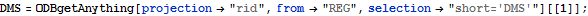

OrientR3S3 - Filtering on SupplierPartCatalog
Graph Traversal with Tuples and Collections Filtering
Initialization
Set Variables

Graph Traversal
Start from Part
Get Item with prtName=‘Acme Widget Washer’
Get Tuples
Get Nexuses
Draw Hypergraph
Add Catalog Tuples
Get Shared Part Items with Catalog
Filter With Shared Part Items
| #53:2→{1081,993,15.3,200,03/03/2014 00:00:00,FALSE} |
| #53:3→{1081,994,20.5,100,03/03/2014 00:00:00,FALSE} |
| #53:14→{1084,994,57.3,100,20/12/2014 00:00:00,TRUE} |
Draw Hypergraph
Add Supplier Tuples
Get Shared Catalog Items with Supplier

Filter with Shared Supplier Items
| #51:0→{1081,Acme Widget Suppliers,1 Grub St., Potemkin Village, IL 61801,ILLINOIS,USA,10} |
| #51:3→{1084,Alien Aircaft Inc.,2 Groom Lake, Rachel, NV 51902,NOTTINGHAM,UK,10} |

Draw Hypergraph
Filtering Collections
Part Item Collections
Filtered with prtName=’Acme Widget Washer’
Catalog Item Collections
Filtered with Shared Items
Supplier Item Collections
Filtered with Shared Items